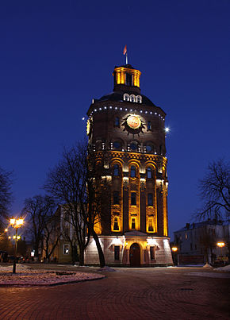
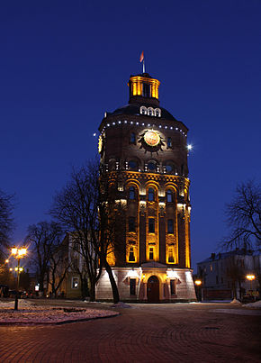

Ві́нниця (МФА: [ˈʋin̪ːɪt͡sʲa] ( прослухати)) — місто на березі Південного Бугу, адміністративний центр Вінницької області, Вінницького району, значний історичний осередок східного Поділля, сучасний економічний і культурний центр держави. Вінницької агломерації. Станом на 2018 рік, населення становить 371,9 тис.